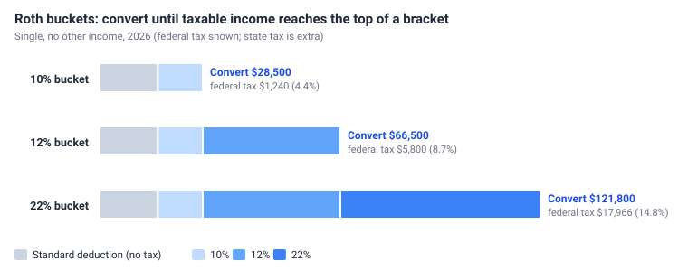

Roth conversions
A Roth conversion moves money from a traditional IRA or 401(k) into a Roth account. You pay income tax on the amount converted; after that it grows tax free, is withdrawn tax free and has no RMDs. Converting in years when your tax bracket is lower than it will be later can lower your lifetime taxes.
Why convert?
- Pay a known rate now instead of a higher one later. RMDs, Social Security and, for a surviving spouse, the narrower single brackets can push later income into the 32% bracket or above. Filling the 22% or 24% bracket now, while you still control your income, can cost less overall.
- Smaller RMDs later. A smaller IRA means smaller required distributions in your 70s and 80s, which could otherwise push you into higher brackets.
- Less tax on Social Security and lower Medicare premiums later, because Roth withdrawals are not income.
- For a surviving spouse, who files single with narrower brackets, and for heirs.
The cost is paying tax now - and the money used to pay it no longer grows for you. Whether conversions pay off depends on your tax rates now versus later, which is exactly what the optimizer tests.
Roth buckets
A Roth bucket is a federal tax bracket to fill. The planner's buckets are the 3rd and 4th federal brackets - 22% and 24% - for your filing status:
| Bucket | Single: fill taxable income up to | Married filing jointly: up to |
|---|---|---|
| 22% | $105,700 | $211,400 |
| 24% | $201,775 | $403,550 |
These are 2026 limits. Each later year they rise with the tax forms inflation rate, and they follow the filing status: married limits while both tax payers are alive, single limits after the first death. A plan keeps the buckets it was created with, so plans created by earlier versions still use 10%, 12% and 22%.

For a single person with no other income in 2026, filling the 22% bucket means converting $121,800 (federal tax $17,966), and filling the 24% bucket means converting $217,875 (federal tax $41,024). The conversion is larger than the bracket because the standard deduction ($16,100) comes first. Any other income - wages, a pension, taxable Social Security, dividends, RMDs, IRA withdrawals - uses up part of the bucket, so less is converted. State tax is extra.
How the planner converts, step by step
- Conversions come last in the year. They are step 7 of the yearly steps, after income, Social Security, RMDs, living expenses, last year's income tax and this year's Medicare premiums. Paying those bills can take money from an IRA or 401(k), or sell investments at a gain - both are taxable income - so the planner waits until all of them are on the year's return before it measures the room left in the bucket.
- Who converts. Each tax payer who is alive and has not reached their RMD start age (72, 73 or 75, depending on year of birth). Tax payer 1 goes first, then tax payer 2. A married couple files one return, so they share one bucket: tax payer 2 converts only the room tax payer 1 left, for example when tax payer 1's IRA is empty or their RMDs have started.
- How much. The room is the bucket's top minus the year's taxable income so far. The planner converts the largest amount that brings taxable income up to the top and not past it. If taxable income is already at or above the top, nothing is converted that year.
- From where, to where. The money comes from the tax payer's own IRA and 401(k) accounts in proportion to their balances (investments that lost value that year are used last) and goes into their own Roth account. If they have no Roth, the first Roth account in the plan is used. With no Roth account holding an investment, nothing is converted.
- On the tax form. A conversion is reported on Form 1040 line 4a (from an IRA) or 5a (from a 401(k)) and shown as Roth Conversion in the cash flows. It moves your own money between accounts, so it is not an expense and does not appear in the income and expense table.
- The tax is paid next year. The conversion's federal and state tax is on this year's return and is paid by Auto in step 6 of the next year, with the rest of that year's taxes - from savings first, which is usually what you want. If Auto has to take it from an IRA, that withdrawal is income of the next year and uses part of the next year's bucket.
Example: the room left in the bucket
Pat is single, 63 and retired, with a $30,000 pension. Pat's savings are used up, so Auto takes the living expenses and last year's tax from the IRA. The plan fills the 22% bucket in 2026.
1. Before the conversion. After steps 5 and 6, Pat's 2026 return looks like this. The planner compares taxable income with the top of the bucket to find the room left:
| Pat's 2026 return before the conversion | Amount |
|---|---|
| Pension (line 5a) | $30,000 |
| IRA withdrawal for living expenses (step 5, line 4a) | $25,000 |
| IRA withdrawal for last year's tax (step 6, line 4a) | $5,000 |
| Total income (line 9) | $60,000 |
| Standard deduction (line 12e) | -$16,100 |
| Taxable income (line 15) | $43,900 |
| Federal tax (line 16) | $5,020 |
| Room left: $105,700 top of the 22% bucket - $43,900 taxable income | $61,800 |
2. After the conversion. Step 7 converts exactly the room. A conversion is one more IRA withdrawal on line 4a, so the same return becomes:
| Pat's 2026 return after the conversion | Amount |
|---|---|
| Pension (line 5a) | $30,000 |
| IRA withdrawal for living expenses (step 5, line 4a) | $25,000 |
| IRA withdrawal for last year's tax (step 6, line 4a) | $5,000 |
| IRA withdrawal for the Roth conversion (step 7, line 4a) | $61,800 |
| Total income (line 9) | $121,800 |
| Standard deduction (line 12e) | -$16,100 |
| Taxable income (line 15) - exactly the top of the 22% bucket | $105,700 |
| Federal tax (line 16), paid in 2027 | $17,966 |
The conversion added $12,946 of federal tax ($17,966 - $5,020, partly at 12% and mostly at 22%) and $2,472 of state tax at the 4% placeholder rate. Both are paid in 2027. Converting last is what keeps the bucket exact: had the planner converted first, the $25,000 and $5,000 IRA withdrawals would have landed on top of a full bucket and been taxed at 24%.
Why the conversion can be smaller than the room
Usually each converted dollar adds one dollar of taxable income. Two rules can make it add more:
- Social Security. More income makes more of your benefits taxable - up to 85 cents more for each dollar - until 85% of the benefits are taxable. See how Social Security is taxed.
- Senior deduction. In 2025-2028 the $6,000 senior deduction shrinks by 6 cents for each dollar of AGI above $75,000 (single) or $150,000 (married). See the senior deduction.
The planner allows for both: it tries amounts until taxable income lands exactly on the bucket's top, so a bucket is never overfilled.
Example: Lee is single, 70, with $30,000 of Social Security and no other income, and fills the 22% bucket in 2026. Before converting, none of the benefits are taxable and the deductions are $24,150 ($18,150 standard deduction with the 65+ add-on, plus the $6,000 senior deduction). So the room looks like $129,850: $105,700 + $24,150. Here is Lee's return both ways:
| Lee's 2026 return | Convert the full room | What the planner converts |
|---|---|---|
| IRA withdrawal for the Roth conversion (line 4a) | $129,850 | $101,245 |
| Taxable Social Security (line 6b) | $25,500 | $25,500 |
| AGI (line 11a) | $155,350 | $126,745 |
| Standard deduction with the 65+ add-on (line 12e) | -$18,150 | -$18,150 |
| Senior deduction after the phase-out (line 13b) | -$1,179 | -$2,895 |
| Taxable income (line 15) | $136,021 | $105,700 |
| Compared with the 22% bucket top of $105,700 | $30,321 over, taxed at 24% | exactly at the top |
Converting the full room would make $25,500 of the benefits taxable and shrink the senior deduction, so taxable income rises by more than the amount converted. The planner converts $101,245 instead - the most that lands exactly on the top.
Run Plan and the optimizer
Run Plan does no conversions. The optimizer runs every combination of ages three ways - no conversions, the 22% bucket and the 24% bucket - in both markets, so you can compare the final net asset value of the same ages with and without conversions.